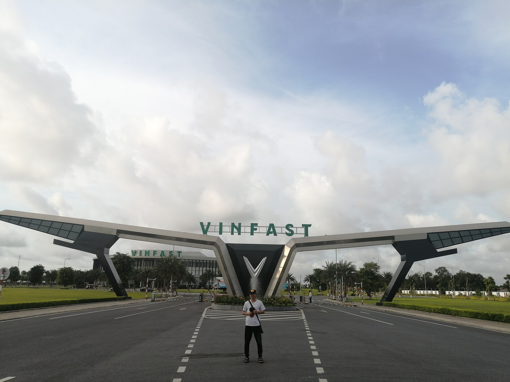
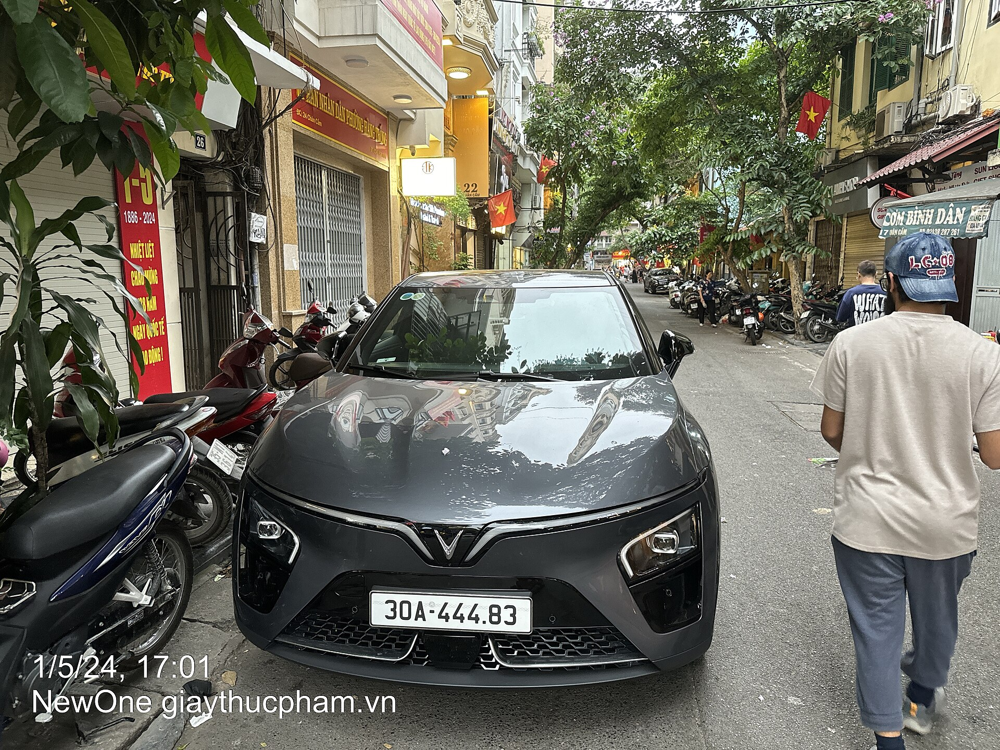
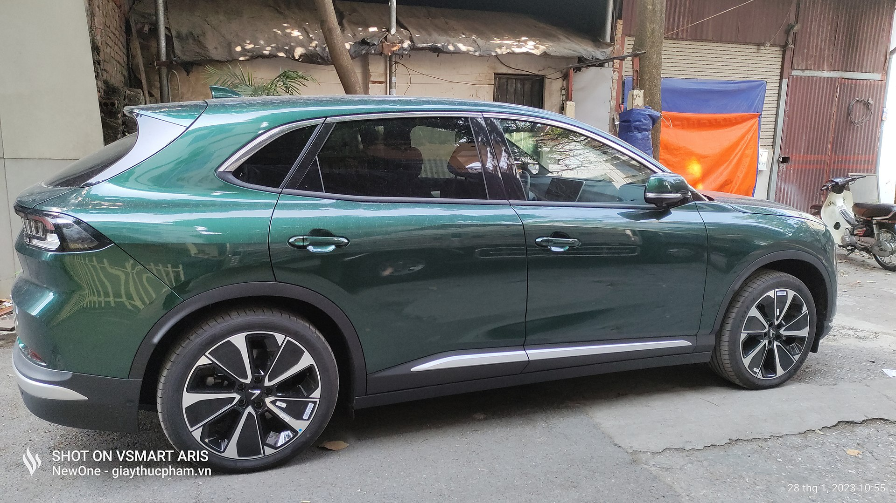

Tư liệu
Thư viện và nguồn tham khảo
Hình ảnh được lưu trong dự án để website hoạt động khi không có Internet. Phần nguồn giúp người xem kiểm tra lại thông tin và giấy phép sử dụng.
Thư viện hình ảnh







Video liên quan
Xem video tham quan nhà máy VinFast
Video tư liệu của Autodaily mở trực tiếp trên YouTube. Cách này tránh lỗi trình phát 153 khi website được mở bằng tệp HTML trên máy tính.
Nguồn tham khảo
- Hồ sơ ứng viên Hội đồng quản trị Phạm Nhật Vượng, Vingroup, 2021. Xem tài liệu.
- VinFast announces leadership transition, Vingroup, 2024. Xem bài viết.
- Phạm Nhật Vượng Profile, Forbes. Xem hồ sơ.
- Annual Report 2024, Vingroup. Trang quan hệ cổ đông.
- Phạm Nhật Vượng, Encyclopaedia Britannica. Xem tiểu sử.
- Thư viện ảnh Phạm Nhật Vượng, Wikimedia Commons. Xem thư viện.
- Hồ sơ VinFast Auto, U.S. Securities and Exchange Commission. Xem hồ sơ công bố.
Phân công nhiệm vụ
| Thành viên | Công việc chính | Công việc hỗ trợ |
|---|---|---|
| Trần Thị Cẩm Ngọc | Viết nội dung và code các trang index.html, cuocdoi.html, hanhtrinh.html, thuvien_nguon.html, style.css | Nghiên cứu tiểu sử, kiểm chứng mốc thời gian và kiểm tra menu chung |
| Hồ Nguyễn Duy An | Viết nội dung và code các trang thanhtuu.html, thuthach.html, tacdong.html, disan_baihoc.html, style.css | Biên tập nội dung, kiểm tra nguồn và thử toàn bộ liên kết nội bộ |